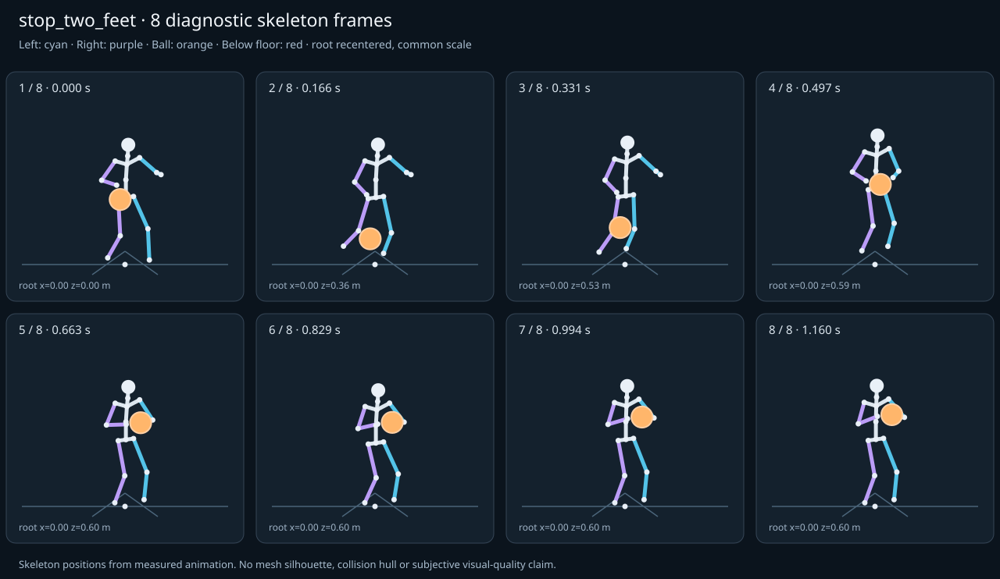

מה הוריד את הציון
- מגע בכדור: חסרים נתוני מדידה (Some declared contacts could not be sampled; partial observations cannot certify the full clip.)
- קפיצות פוזה: RightHand בזמן 0.4806 ש׳; קפיצת סיבוב שקולה 22.719 מעלות ב־60Hz (צהוב)
- כניסה ויציאה מול המתנה: פער ב־יציאה מול המתנה; יחס חריגה 1.3513 (צהוב)
כיסוי: 86%. לא כל מדד חל על כל קליפ; הסטטוס והראיות מפורטים למטה.
שמונה פריימים
תצוגת שלד אבחונית שנבנתה מהפריימים הנמדדים. צד שמאל בכחול, ימין בסגול, כדור בכתום. מיקום השורש ממורכז לצפייה; מיקומו בעולם כתוב בכל פריים.

המדדים והראיות
| מדד | מצב | ערך | ציון | סף ופרטי מדידה |
|---|---|---|---|---|
| החלקת רגליים | ירוק | 0 height ratio | 100 | {
"definition": {
"label": "החלקת רגליים",
"unit": "height ratio",
"green": 0.01,
"yellow": 0.035,
"weight": 18,
"description": "Maximum horizontal sole displacement from the first sample of each declared support window, divided by character height. Inferred support is used only when no windows were supplied."
},
"value": 0.000002,
"status": "green",
"score": 100,
"evidence": {
"coordinateSpace": "authored reference world (simulation-owned)",
"supportSource": "declared",
"windows": 4,
"samples": 254,
"maxDriftMeters": 0.000004,
"p95SpeedMetersPerSecond": 0.002502,
"worst": {
"bone": "LeftFoot",
"t": 0.7,
"start": 0.638,
"end": 1.16,
"driftMeters": 0.000004
}
}
} |
| חדירה לרצפה | ירוק | 0 height ratio | 100 | {
"definition": {
"label": "חדירה לרצפה",
"unit": "height ratio",
"green": 0.005,
"yellow": 0.02,
"weight": 15,
"description": "Maximum depth of the supplied sole probe points and all skeletal joint centers below the declared floor plane, divided by height. Sole probes are not a mesh collision audit."
},
"value": 0.000009,
"status": "green",
"score": 99.96,
"evidence": {
"samples": 4280,
"floorY": 0,
"probeKind": "declared sole probes plus skeletal joint centers (no mesh surfaces)",
"maxDepthMeters": 0.000015,
"worst": {
"t": 0.7,
"bone": "LeftFoot",
"depthMeters": 0.000015,
"y": -0.000015
}
}
} |
| קפיצות פוזה | צהוב | 1.515 discontinuity ratio | 70 | {
"definition": {
"label": "קפיצות פוזה",
"unit": "discontinuity ratio",
"green": 1,
"yellow": 2.5,
"weight": 18,
"description": "Maximum adjacent 60 Hz-equivalent step: root-relative marker displacement / 0.04 height, root-relative rotation / 15 degrees, or root translation / 0.08 height. A fast continuous action can also exceed this screening threshold."
},
"value": 1.5146,
"status": "yellow",
"score": 69.71,
"evidence": {
"adjacentPairs": 213,
"observations": 3621,
"maxDegrees60Hz": 22.719003,
"maxMarkerStepHeight60Hz": 0.029777,
"maxRootStepHeight60Hz": 0.027464,
"worst": {
"ratio": 1.5146002210148466,
"t": 0.480571,
"previousTime": 0.472286,
"bone": "RightHand",
"markerStepHeight60Hz": 0.00865,
"degrees60Hz": 22.719003
}
}
} |
| חריגות אנטומיות | ירוק | 0 % affected frames | 100 | {
"definition": {
"label": "חריגות אנטומיות",
"unit": "% affected frames",
"green": 0.5,
"yellow": 3,
"weight": 14,
"description": "Percentage of frames with elbow or knee flexion above 165 degrees, neck bend above 80 degrees, or a segment length changing by more than 5%. Optional calibrated hinge checks detect reverse knee flexion above 8 degrees. Conservative marker limits do not diagnose axial joint twist."
},
"value": 0,
"status": "green",
"score": 100,
"evidence": {
"testedFrames": 214,
"affectedFrames": 0,
"checks": 3638,
"maxLimbFlexionDegrees": 114.052754,
"maxRelativeSegmentLengthChange": 0,
"hingeDirectionChecked": true,
"axialTwistChecked": false,
"violations": []
}
} |
| מגע בכדור | אין די נתונים | — height ratio | — | {
"definition": {
"label": "מגע בכדור",
"unit": "height ratio",
"green": 0.015,
"yellow": 0.05,
"weight": 13,
"description": "Maximum absolute distance from the ball surface to the sampled, bone-transformed declared contact point, divided by height. Events are evaluated at their exact declared times by interpolation."
},
"value": null,
"status": "insufficient-data",
"score": null,
"reason": "Some declared contacts could not be sampled; partial observations cannot certify the full clip.",
"evidence": {
"radiusMeters": 0.12,
"samples": 262,
"missed": [
{
"bone": "LeftHand",
"t": 1.16,
"reason": "outside sampled interval"
},
{
"bone": "RightHand",
"t": 1.16,
"reason": "outside sampled interval"
}
],
"contacts": [
{
"t": 0.483333,
"bone": "RightHand",
"gapMeters": 0.000637,
"signedGapMeters": -0.000637,
"centerDistanceMeters": 0.119363,
"contactPoint": [
-0.279234,
1.053325,
0.977571
],
"ballCenter": [
-0.185264,
0.980324,
0.986948
],
"declaredLocalPoint": true
},
{
"t": 0.466667,
"bone": "RightHand",
"gapMeters": 0.000572,
"signedGapMeters": -0.000572,
"centerDistanceMeters": 0.119428,
"contactPoint": [
-0.275445,
1.047395,
0.976304
],
"ballCenter": [
-0.215147,
0.944481,
0.982302
],
"declaredLocalPoint": true
},
{
"t": 0.5,
"bone": "RightHand",
"gapMeters": 0.000291,
"signedGapMeters": -0.000291,
"centerDistanceMeters": 0.119709,
"contactPoint": [
-0.269094,
1.048937,
0.979704
],
"ballCenter": [
-0.156257,
1.010575,
0.990952
],
"declaredLocalPoint": true
},
{
"t": 0.45,
"bone": "RightHand",
"gapMeters": 0.000212,
"signedGapMeters": -0.000212,
"centerDistanceMeters": 0.119788,
"contactPoint": [
-0.271865,
1.02021,
0.974339
],
"ballCenter": [
-0.243218,
0.90393,
0.977091
],
"declaredLocalPoint": true
},
{
"t": 0.416667,
"bone": "RightHand",
"gapMeters": 0.000155,
"signedGapMeters": -0.000155,
"centerDistanceMeters": 0.119845,
"contactPoint": [
-0.284805,
0.932071,
0.965341
],
"ballCenter": [
-0.283169,
0.812236,
0.965287
],
"declaredLocalPoint": true
},
{
"t": 0.4,
"bone": "RightHand",
"gapMeters": 0.000125,
"signedGapMeters": -0.000125,
"centerDistanceMeters": 0.119875,
"contactPoint": [
-0.289895,
0.882751,
0.958956
],
"ballCenter": [
-0.289851,
0.762877,
0.958851
],
"declaredLocalPoint": true
},
{
"t": 0.433333,
"bone": "RightHand",
"gapMeters": 0.000105,
"signedGapMeters": -0.000105,
"centerDistanceMeters": 0.119895,
"contactPoint": [
-0.276431,
0.979059,
0.970621
],
"ballCenter": [
-0.266788,
0.859554,
0.971394
],
"declaredLocalPoint": true
},
{
"t": 0.516667,
"bone": "RightHand",
"gapMeters": 0.000099,
"signedGapMeters": -0.000099,
"centerDistanceMeters": 0.119901,
"contactPoint": [
-0.249221,
1.049095,
0.982469
],
"ballCenter": [
-0.130813,
1.034353,
0.994238
],
"declaredLocalPoint": true
},
{
"t": 0.533333,
"bone": "RightHand",
"gapMeters": 0.000036,
"signedGapMeters": -0.000036,
"centerDistanceMeters": 0.119964,
"contactPoint": [
-0.23095,
1.05419,
0.984877
],
"ballCenter": [
-0.111622,
1.050773,
0.996728
],
"declaredLocalPoint": true
},
{
"t": 0.566667,
"bone": "LeftHand",
"gapMeters": 0.000013,
"signedGapMeters": -0.000013,
"centerDistanceMeters": 0.119987,
"contactPoint": [
0.019696,
1.059888,
0.987212
],
"ballCenter": [
-0.099699,
1.059879,
0.999123
],
"declaredLocalPoint": true
},
{
"t": 0.6,
"bone": "RightHand",
"gapMeters": 0.000012,
"signedGapMeters": -0.000012,
"centerDistanceMeters": 0.119988,
"contactPoint": [
-0.207111,
1.055082,
0.986716
],
"ballCenter": [
-0.087717,
1.055087,
0.998641
],
"declaredLocalPoint": true
},
{
"t": 0.616667,
"bone": "RightHand",
"gapMeters": 0.00001,
"signedGapMeters": -0.00001,
"centerDistanceMeters": 0.11999,
"contactPoint": [
-0.192803,
1.049349,
0.985403
],
"ballCenter": [
-0.073406,
1.049362,
0.997316
],
"declaredLocalPoint": true
},
{
"t": 0.6,
"bone": "LeftHand",
"gapMeters": 0.000009,
"signedGapMeters": 0.000009,
"centerDistanceMeters": 0.120009,
"contactPoint": [
0.031699,
1.05508,
0.986716
],
"ballCenter": [
-0.087717,
1.055087,
0.998641
],
"declaredLocalPoint": true
},
{
"t": 0.683333,
"bone": "RightHand",
"gapMeters": 0.000009,
"signedGapMeters": -0.000009,
"centerDistanceMeters": 0.119991,
"contactPoint": [
-0.127102,
1.023079,
0.978841
],
"ballCenter": [
-0.007706,
1.023082,
0.990771
],
"declaredLocalPoint": true
},
{
"t": 0.683333,
"bone": "LeftHand",
"gapMeters": 0.000007,
"signedGapMeters": 0.000007,
"centerDistanceMeters": 0.120007,
"contactPoint": [
0.111707,
1.02308,
0.978842
],
"ballCenter": [
-0.007706,
1.023082,
0.990771
],
"declaredLocalPoint": true
},
{
"t": 0.583333,
"bone": "RightHand",
"gapMeters": 0.000007,
"signedGapMeters": -0.000007,
"centerDistanceMeters": 0.119993,
"contactPoint": [
-0.215863,
1.058589,
0.98734
],
"ballCenter": [
-0.096464,
1.058586,
0.999263
],
"declaredLocalPoint": true
},
{
"t": 0.7,
"bone": "RightHand",
"gapMeters": 0.000007,
"signedGapMeters": -0.000007,
"centerDistanceMeters": 0.119993,
"contactPoint": [
-0.120927,
1.020613,
0.978225
],
"ballCenter": [
-0.001528,
1.020611,
0.990153
],
"declaredLocalPoint": true
},
{
"t": 0.55,
"bone": "RightHand",
"gapMeters": 0.000006,
"signedGapMeters": -0.000006,
"centerDistanceMeters": 0.119994,
"contactPoint": [
-0.220773,
1.059131,
0.986458
],
"ballCenter": [
-0.10137,
1.058954,
0.998344
],
"declaredLocalPoint": true
},
{
"t": 0.616667,
"bone": "LeftHand",
"gapMeters": 0.000006,
"signedGapMeters": 0.000006,
"centerDistanceMeters": 0.120006,
"contactPoint": [
0.046007,
1.049342,
0.985399
],
"ballCenter": [
-0.073406,
1.049362,
0.997316
],
"declaredLocalPoint": true
},
{
"t": 0.666667,
"bone": "RightHand",
"gapMeters": 0.000006,
"signedGapMeters": -0.000006,
"centerDistanceMeters": 0.119994,
"contactPoint": [
-0.139101,
1.027869,
0.980048
],
"ballCenter": [
-0.0197,
1.02788,
0.99197
],
"declaredLocalPoint": true
}
],
"contactDetailsTruncated": true,
"coordinateSpace": "authored reference world (simulation-owned)",
"observedValue": 0.000377,
"observedStatus": "green",
"observationCoverage": 0.9924242424242424
},
"partial": true
} |
| כניסה ויציאה מול המתנה | צהוב | 1.351 continuity ratio | 75 | {
"definition": {
"label": "כניסה ויציאה מול המתנה",
"unit": "continuity ratio",
"green": 1,
"yellow": 3,
"weight": 10,
"description": "Worst entry/exit mismatch to the best matching idle phase: RMS marker error / 0.04 height, RMS bone rotation / 25 degrees, or RMS endpoint velocity error / 0.75 height per second. Horizontal root translation is aligned; root height and body pose remain measurable."
},
"value": 1.351315,
"status": "yellow",
"score": 74.73,
"evidence": {
"entry": {
"ratio": 0.8614317229313374,
"t": 0,
"idleTime": 0.88,
"markers": 17,
"rmsPositionHeight": 0.030945,
"rmsRotationDegrees": 10.792435,
"rmsVelocityHeightPerSecond": 0.646074,
"velocityEvaluated": true
},
"exit": {
"ratio": 1.3513151319081895,
"t": 1.16,
"idleTime": 0,
"markers": 17,
"rmsPositionHeight": 0.054053,
"rmsRotationDegrees": 30.040728,
"rmsVelocityHeightPerSecond": 0.041728,
"velocityEvaluated": true
},
"worstEndpoint": "exit",
"alignment": "horizontal root translation; raw asset poses used when provided"
}
} |
| מהירות גוף מול צעדים | לא חל | — relative speed error | — | {
"definition": {
"label": "מהירות גוף מול צעדים",
"unit": "relative speed error",
"green": 0.2,
"yellow": 0.5,
"weight": 8,
"description": "Relative difference between average root travel speed and the median backward support-foot sweep speed relative to the root. Cadence and implied stride lengths are also reported. In-place clips need an explicit reference travel scenario; stationary actions are not scored as locomotion."
},
"value": null,
"status": "not-applicable",
"score": null,
"reason": "This action is not declared locomotion.",
"evidence": {}
} |
| סימטריה | ירוק | 0 relative mismatch | 100 | {
"definition": {
"label": "סימטריה",
"unit": "relative mismatch",
"green": 0.03,
"yellow": 0.1,
"weight": 4,
"description": "Maximum bilateral segment-length mismatch. Looping locomotion additionally compares reflected half-cycle leg markers; explicit pose symmetry compares simultaneous bilateral markers. One-sided actions retain unscored motion diagnostics, so a valid kick or dribble arm is not penalized for intentional asymmetry."
},
"value": 0,
"status": "green",
"score": 100,
"evidence": {
"mode": "structural",
"modeSource": "structural default for intentional asymmetry",
"structuralMismatch": 0,
"segments": [
{
"segment": "Arm-ForeArm",
"mismatch": 0
},
{
"segment": "ForeArm-Hand",
"mismatch": 0
},
{
"segment": "UpLeg-Leg",
"mismatch": 0
},
{
"segment": "Leg-Foot",
"mismatch": 0
}
],
"motionRmsHeight": null,
"worstMotion": null,
"bilateralPoseRmsHeightUnscored": 0.054152,
"note": "One-sided authored actions are checked for structural symmetry only."
}
} |